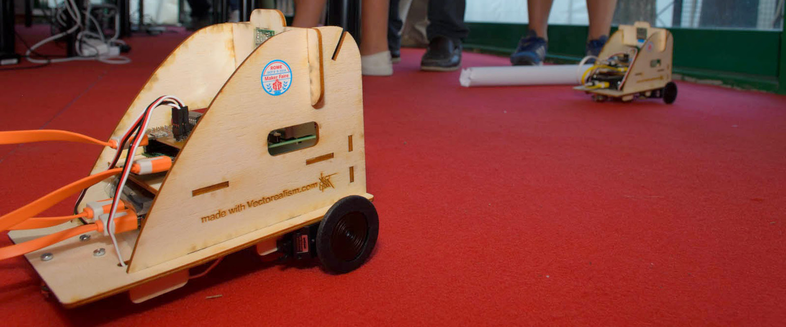
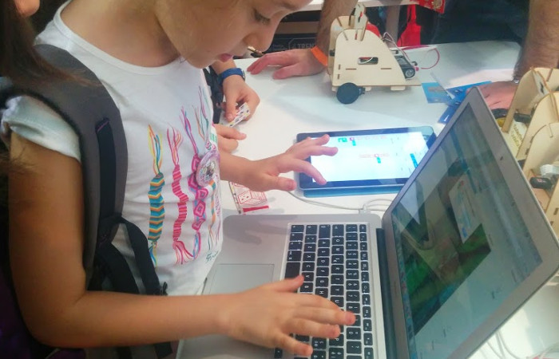
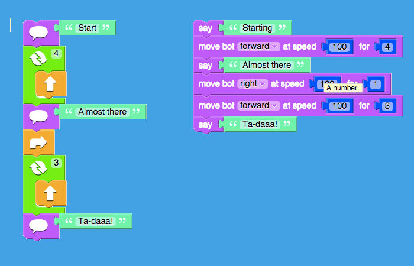

Che cos'è
CoderBot è un robot orientato alla didattica.
L'obiettivo principale del progetto è realizzare un robot in grado di essere programmato da bambini dai 6 anni in avanti, e che rimanga interessante e offra spunti per l'apprendimento a ragazzi fino ai 14 anni (e oltre).
Come è fatto
E' un veicolo con due ruote motrici anteriori indipendenti e un terzo punto di appoggio posteriore costituito da una sfera libera.
E' basato su Raspberry PI, un computer completo (CPU, GPU, audio, memoria RAM e flash).
Alla scheda principale sono collegati una videocamera, una scheda di controllo per i due motori (DC oppure servo) e un adattatore wifi. L'audio è amplificato tramite un altoparlante autoalimentato.
Il sistema operativo è Raspbian, una versione di Linux Debian specifica per Raspberry, su cui si appoggiano alcune componenti per gestire rete, videocamera, motori e interfaccia utente, quest'ultima realizzata come una web application html5 a sua volta erogata da un web server.
Cosa può fare
Il robot è in grado di muoversi su superfici piane: avanti, indietro e ruotare sul posto o curvare con raggi variabili, agendo sulla velocità dei due motori.
E' controllabile via web tramite un pc, un tablet o uno smartphone che sia in grado di connettersi via wifi al robot.

CoderBot può essere utilizzato come un "rover" teleguidato, grazie alla telecamera integrata trasmette le immagini dell'ambiente che gli si trova davanti.
CoderBot è inoltre programmabile tramite un linguaggio a blocchi (blockly) specifico per bambini dai 6 anni in avanti.
L'editor è configurabile in vari livelli di complessità e completezza delle istruzioni, in modo da poter facilitare l'apprendimento per gradi.
Per i più avanzati, CoderBot è inoltre programmabile direttamente in python, utilizzando delle librerie molto semplici ed intuitive.
{% highlight python %} import coderbot bot = coderbot.CoderBot.get_instance() bot.forward(speed=100, elapse=2.5) bot.left(speed=60, elapse=1) {% endhighlight %}Grazie alla Camera è in grado di riprendere immagini e trasmetterle al dispositivo usato per pilotarlo (computer, tablet o smartphone).
Inoltre può utilizzare le immagini per evitare ostacoli:
[Esempio di riconoscimento ostacolo]
Per riconoscere e seguire linee:
[Esempio di line follower]
Per riconoscere oggetti in base al loro colore:
[Esempio di color catcher]
E' anche in grado di riconoscere visi di persone e simboli predefiniti.
[Esempio di face finder]
[Esempio di signal finder]